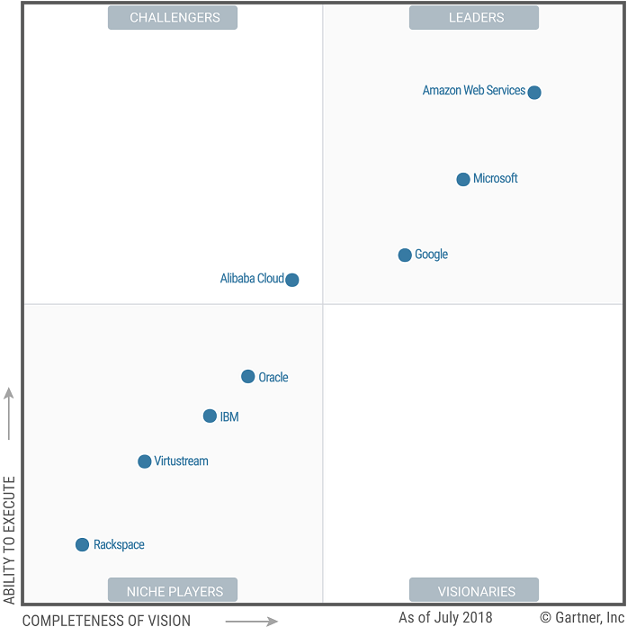

公共云存储服务市场越来越多地利用混合云存储基础架构。 基础设施和运营领导者应选择能够提供端到端解决方案的提供商，因为并非所有提供商都能满足企业需求。Gartnerf发布了新一年的Magic Quadrant, 关于世界范围内公有云市场上各大供应商的排名，并且进行了比较。这一年中，Microsoft与Amazon的差距进一步缩小。不过同时，Micosoft也被其他竞争对手追赶并且缩小了差距。阿里云的地位，比较2017年有了比较大的提升，但任然处于竞争者的地位，而非领导者地位。处于领导者地位的三家公司为Amazon, Microsoft, Google.
Market Definition/Description
公共云存储是基础架构即服务（IaaS），提供通过各种协议提供的块，文件，对象和混合云存储服务。 这些服务是独立的，但通常与计算和其他IaaS产品结合使用。 服务的定价基于容量，数据传输和/或请求数量。 这些服务提供按需存储容量和自我配置功能。 存储的数据存在于多租户环境中，用户通过服务提供的块，网络和REST协议访问该数据。
Magic Quadrant
Magic Quadrant for Public Cloud Storage Services, Worldwide 2018

Source: Gartner (August 2018)
云业务供应商的优缺点对比
Amazon Web Services
Amazon Web Services (AWS), 是Amazon旗下的一家子公司, 其目标为云业务的提供商. 他在2006年开始，向世界展示了Amazon Simple Storage Service (Amazon S3), 从此一直在云业务市场处于领头羊的地位。
服务提供: AWS 提供了非常广泛的云业务，其中包括 ：
- S3 (object storage)
- Glacier (cold storage)
- Elastic Block Store (EBS; block storage)
- Elastic File System (EFS; file storage)
- Snowball Edge (data transport and edge computing)
- Snowmobile (data transport)
- Storage and File Gateway (cloud storage gateways)
数据中心: AWS的数据中心按照区域来进行区分。每一个大区域至少包括了2个availability zones (数据中心). 目前支持多个区域，包括 U.S., as well as in Canada, France, Germany, Ireland, U.K., Australia, India, Japan, Singapore, South Korea and Brazil. 同时还提供了一个美国联邦政府专用的区域(region). 2 个 China regions, 北京 和宁夏。北京的region由sinnet负责运维，西宁的region由Ningxia Western Cloud Data Technology [NWCD] 负责。
网站管理Portal和文档提供多国语言支持. 英语，荷兰语，法语，德语，意大利语，日语，韩语，普通话，葡萄牙语和西班牙语. 支持的主要语言是英语，日语和普通话，但AWS将在合同中承诺提供大量其他语言的支持。
推荐模式和用途： AWS的存储服务通常会吸引Mode 2的使用者，但其存储服务越来越多地用于关键业务的 Mode 1应用程序工作负载。
Strengths:
- 就收入和管理数据量而言，Amazon S3是领先者。 亚马逊S3 API的压倒性优势使AWS能够控制使用S3 API的开发人员的生态系统，以及在本地交付的存储产品中实施S3 API的存储供应商。
- 客户将AWS的存储服务用于广泛的工作负载，从纯云业务(cloud-native)到传统的企业应用。 相关地，AWS通常位于Windows和Oracle应用程序的候选名单中。
- AWS是少数能够提供从边缘和本地企业数据中心到公共云存储服务的端到端解决方案而无需进行安全权衡的能力提供商之一。AWS可以通过包含强大安全性和性能功能的覆盖提供集成体验的此类解决方案。
Cautions:
- 尽管固态硬盘（SSD）的价格迅速下降，但自2014年以来，AWS的通用固态硬盘（称为gp2）的价格并没有下降。对于最常用的类型的块存储，四年内价格没有降低 在AWS上，人们普遍认为AWS经常会全面降低其服务的价格。
- AWS面临来自谷歌和微软的激烈竞争，并且在中国与阿里巴巴的竞争中黯然失色。 AWS的一些竞争对手开始采用更为创新的方式来吸引AWS的传统用户。这些竞争对手提供了更为深度的定制化服务。这些竞争对手以戴尔，EMC和NetApp等公司为例。
- AWS存储服务的最佳使用需要许多企业缺乏的一系列复杂技能。 客户通常需要专注于AWS的托管服务提供商提供的专业服务来填补技能差距。
微软
微软拥有全面的IaaS（计算，存储和网络）产品组合。 快速的全球扩张和混合云支持一直是微软云战略的基石。
服务提供: Microsoft提供对象存储（Azure Hot，Cool和Archive Blob存储），文件存储和块存储（标准和高级，托管或非托管）。
数据中心: Microsoft将其Azure数据中心位置分组到区域中。 它开始引入可用区（一个区域内的多个数据中心）。 美国，加拿大，英国，法国，德国，澳大利亚，印度，日本和韩国有多个Azure地区，以及爱尔兰，荷兰，香港，新加坡和巴西的地区。 美国联邦政府还有六个地区; 两个致力于美国国防部。 （两个Azure中国区域是由21Vianet Group运营的单独服务的一部分，并且需要特定于中国的帐户。）Microsoft已在全球范围内销售。 文档有英语，法语，德语，意大利语，西班牙语，葡萄牙语，日语，韩语，俄语和普通话。 支持和服务门户以这些语言提供，还有捷克语，荷兰语，匈牙利语，波兰语，俄语，瑞典语和土耳其语。
推荐模式和用途： Microsoft针对广泛的 Mode 1 和 Model 2 用例，包括归档，备份，内容分发，应用程序开发，云原生应用程序和大数据分析。
Strengths:
- 大量主流企业首次开始使用公共云IaaS，因为它们使IT基础架构现代化并关闭其企业数据中心。 其中许多企业采用以Windows为重点的工作负载，并且至少会将Azure评估为首选。 Microsoft利用其与企业的现有关系，这些企业已经习惯于与公司进行交易，以此作为鼓励使用Azure及其存储服务的手段，并且该策略将继续发挥作用。
- 企业始终将微软的存储服务和团队称为“企业就绪”，反映了他们的互动能力以及对Azure云存储服务的看法。
- 微软的对象存储服务从一个较小的基础开始，但在管理数据量方面相对于其竞争对手而言显着增加。
Cautions:
- 微软早期推向市场，计划主要提供本地部署的存储产品作为本机公共云服务，例如使用NetApp开发的网络文件系统（NFS）服务。 但NetApp的ONTAP具有扩展架构，尚未在公共云IaaS提供商的横向扩展环境中得到验证。
- 虽然微软声称许多地区提供其存储服务，但在基础设施和构成单个地区的设施数量方面，这些地区的构成并不总是与其他提供商的构成相匹配。 相关地，在某些地区，Azure的存储服务最近经历了大量停机。
- 微软一直在缓慢推进一些产品的状态。 特别是，到目前为止，Azure Stack和Azure的公共云存储产品之间没有集成点，Azure Files仍然不支持Active Directory，也不支持SSD。
谷歌是一家总部位于美国的互联网，广告，搜索和云计算服务提供商，于2010年进入公共云存储市场。
服务提供: 谷歌提供永久磁盘（块），谷歌云存储（GCS;对象）和传输设备（数据传输）.
数据中心: Google在美国多个地点提供存储服务，并在比利时，日本，新加坡，台湾和英国开展业务。在过去的12个月中，Google云平台（GCP）增加了蒙特利尔，荷兰，洛杉矶，孟买，圣保罗 ，法兰克福，悉尼，伦敦和北弗吉尼亚州。 它拥有全球销售业务。 支持英语和日语。 该门户网站提供英语，荷兰语，法语，德语，意大利语，波兰语，西班牙语，土耳其语，俄语，葡萄牙语，韩语，日语，普通话和泰语。 文档仅以英文提供。
推荐模式和用途： Google云存储最适合 Mode 2 工作负载，例如云原生应用程序，大数据分析存储库，机器学习和内容分发，以及备份和归档。 持久磁盘（块存储）用于通常用于需要块存储的计算工作负载的高性能事务数据库系统。 它还可用于大规模计算工作负载，如基因组分析和媒体处理。
Strengths:
- 与Gartner独立测量和记录的多区域对象存储服务的主要竞争对手相比，Google的可用性和网络性能始终更高。
- 谷歌在过去12个月中在意识和赢得业务方面在Gartner的企业客户方面取得了进步。 越来越多的企业客户正在考虑使用GCS，并且正在为Google的服务做出数百万美元的巨额承诺。
- 与竞争产品相比，Google客户非常欣赏GCS单一，一致的API，可靠的性能和整体简便性。 GCS在所有对象存储产品中的通用API集可以更轻松地进行应用程序开发，并且可以跨存储层和混合云存储集成更轻松地迁移数据。 谷歌正在通过关闭GCS产品的功能和差距，与数据管理独立软件供应商（ISV）以及企业存储公司（如戴尔EMC和NetApp）合作，取得进展。
Cautions:
- 谷歌的云存储产品仍然主要用于面向云原生的用例，而不是传统的企业工作负载 - 这反映了谷歌在企业市场的早期地位和市场化努力。
- 谷歌以极大的折扣吸引新客户以保持竞争力，但一些客户表示，由于计费系统缺陷，谷歌无法处理承诺的折扣，因此需要用户持续监督。
- 虽然谷歌积极寻求与存储厂商建立合作伙伴关系，但在提供混合云基础架构平台和由云存储网关和边缘优化计算和存储解决方案组成的边缘解决方案方面仍然落后于其主要竞争对手。 此外，谷歌没有考虑职业安全和健康管理（OSHA）标准开发其转移设备，也没有完全封装在坚固耐用的容器中。 此外，它缺乏边缘计算和物联网使用案例所需的关键特性。
阿里云
阿里云是阿里巴巴集团的子公司，是一家以云为中心的服务提供商，总部位于中国。 它成立于2009年，最初为阿里巴巴集团的电子商务业务提供服务。 此魔力象限评估侧重于阿里云的国际业务，总部设在新加坡，我们的评估是使用国际服务进行的。
服务提供: 阿里云的云存储产品包括对象存储服务（OSS），云盘（块存储），网络附加存储（NAS）和云存储网关软件设备（预览版）。
数据中心: 阿里云在中国的多个地区开展业务，并在美国（东海岸和西海岸），德国，澳大利亚，香港，日本，新加坡，印度，马来西亚和阿拉伯联合酋长国开展业务。 它在美国，中国，德国，澳大利亚，日本，香港和新加坡都有本地销售。 中国服务门户，文档和支持都是普通话。 国际门户网站，文档和支持包括英语，普通话和日语。
推荐模式和用途： 阿里巴巴云吸引了寻求支持敏捷工作负载的基础设施的 Mode 2 的客户。
Strengths:
- 阿里云是目前中国云IaaS的市场份额领导者，在中国公共部门和数字业务方面表现尤为突出。 阿里巴巴集团拥有继续投资新地区，工程工作以及阿里云的区域销售和营销的财务资金。
- 阿里云现有的存储服务组合证明了该供应商有可能在一段时间内成为某些地区全球超大规模云提供商的替代品。 阿里云不仅拥有多种多样的功能 - 现在已经可以与其他超大规模提供商的服务组合相媲美 - 而且还开始建立广泛的全球数据中心。
- 阿里云开发了用于图像和视频识别的人工智能功能，可以无缝地利用其存储服务。
Cautions:
- 阿里云的一些产品并不适用于即用即付，弹性的云计算模式。 特别是，他的NAS和一些小到四个虚拟CPU（vCPU）的计算实例类型需要每月最低消费，这可能会将基础块存储量与相同的月度最低消费联系起来，尽管每小时都有广告价格。 此外，他的NAS产品并未在公司提供IaaS的所有地区广泛使用。
- 阿里云的国际存储服务几乎没有提供独特的差异化。 特别是对象存储，阿里巴巴精神上采用了亚马逊S3 API，但由于阿里巴巴的实施，它更难采用。
- 由于公司仍在建设所需的本地人才，行业专业知识和上市能力，阿里巴巴在国际业务上的建设进展缓慢。 阿里巴巴云继续将其产品扩展到中国以外的市场，但该公司尚未与这些市场的买家建立实质性的市场份额。
IBM
IBM是一家总部位于美国的全球技术硬件，软件和服务供应商。 该公司正在逐步淘汰SoftLayer和Bluemix品牌，转而采用通用的IBM Cloud品牌。
重要说明：IBM目前运行两个独立的对象存储平台。 IBM Cloud Object Storage（COS）基于从Cleversafe获得的技术，是IBM Cloud中可用的主要对象存储服务。 最初基于OpenStack Swift的对象存储的客户正在转换为COS。
服务提供: 除了COS之外，IBM还在专用和多租户部署中提供基于文件和块的存储。
数据中心: IBM在美国（德克萨斯州达拉斯，加利福尼亚州圣何塞和华盛顿特区），欧盟（法兰克福，米兰和阿姆斯特丹）和亚太地区（首尔，香港和东京）提供COS作为跨区域服务; 作为欧盟英国，美国东部和美国南部的区域; 以及阿姆斯特丹的单一数据中心; 印度钦奈; 达拉斯（联邦）; 华盛顿特区（联邦）;墨尔本; 和多伦多。 IBM提供粤语，英语，法语，德语，意大利语，日语，韩语，葡萄牙语和西班牙语的文档和支持。
推荐模式和用途： IBM的产品适用于 Mode 1 备份，归档和灾难恢复服务; Mode 1 应用程序迁移到云; 和 Mode 2 应用程序，特别是那些由IBM的分析功能启用的应用程序。
Strengths:
- IBM的COS在设计规模方面具有良好的声誉，专注于耐用性和弹性。 在Gartner看来，COS产品是整个IBM Cloud服务组合中构建较好的产品之一。 最近使用IBM Aspera产品的COS的增强功能得到了优雅的实施，并反映了现有IBM功能的巨大组合，以解决大型客户问题。
- Gartner客户在IBM COS实施和迁移期间强调了高水平的技术支持（自助，社交媒体，电话，门票和聊天）。
- IBM在内容分发，分析，数据管理，归档，备份和云存储网关等领域与主要企业ISV建立了70多个合作伙伴关系。
Cautions:
- 与主要使用自己的软件定义存储基础架构的领先超大规模公共云提供商不同，IBM继续依赖打包的商业存储设备进行块和文件存储。 此外，IBM的Performance and Endurance块存储仅作为数据中心子集中的每小时服务提供。 此外，IBM独立于实例的块存储产品需要复杂的配置，授权和操作系统设置，并且无法承受大量的I / O使用。
- IBM的混合云存储战略显着落后于公共云存储市场的领导者。 IBM的战略主要依赖于合作关系，并且由于其本地混合云工作流与本地IBM存储或边缘存储服务没有直接的互操作性，因此仍然保持沉默。
- 围绕IBM云存储产品的下一代基础设施（NGI）显着延迟。 IBM目前无法公开为新的NGI元素提供测试版或一般可用性日期。 NGI服务的细节尚未公布。 在整个云IaaS业务历史中，IBM一再遇到工程挑战，这些挑战对其上市时间产生了负面影响。 因此，客户必须承担不确定路线图的风险。 这种不确定性也会影响合作伙伴，从而影响潜在的生态系统。
Oracle
Oracle是IaaS市场的后来者，但它是一系列软件和硬件产品的成熟企业IT服务提供商，现在拥有许多软件产品的基于云的产品。
重要提示：Oracle目前运营着两个独立的IaaS平台：传统服务和新产品。 Oracle云基础架构（OCI;以前的品牌Oracle裸机云服务[BMCS]）于2016年10月推出。此评估仅涵盖第二代产品，不评估Oracle Cloud Infrastructure Classic的任何元素（以前称为Oracle Compute） 云）。
服务提供: Oracle提供块卷，文件存储，对象存储和存档存储服务。
数据中心: OCI在美国，英国和德国的数据中心运营存储服务。 Oracle为这两项服务提供英语销售，客户支持，技术支持，门户和文档。
推荐的模式和用途: Oracle的OCI Classic产品适用于Oracle数据库和应用程序的模式1客户，而OCI适用于Oracle的一些模式1和模式2客户，这些客户具有受益于裸机的云原生应用程序和批处理计算要求服务器。
Strengths:
- Oracle的优势在于使用清洁表设计来构建OCI的存储服务，其工程师团队曾为AWS和Microsoft各自的公共云IaaS产品的成功做出贡献。
- Oracle正试图通过将面向客户的内部Oracle SaaS产品迁移到Oracle云基础架构来实现规模扩张。这种实现规模的策略在很大程度上起作用，并有助于降低考虑OCI存储服务及其新生性质的最终用户的风险。
- Oracle通过实现非易失性存储器（NVMe）和基于SSD的存储实现裸机块存储服务，以极具吸引力的价格提供高性能。与Oracle竞争对手的复杂模型相比，该服务的可预测性能和简化定价是受欢迎的。
Cautions:
- 甲骨文目前的战略主要集中在Oracle数据库和应用程序上，因此，它在短期内定位不佳，无法为采用云优先或纯云策略的全球公司提供一站式服务。
- 鉴于大多数Oracle应用程序不使用对象存储等云原生构造OCI的对象存储服务并不适合大型Oracle服务组合。与Oracle应用程序的集成点主要限于面向备份的用例。
- 对于此魔力象限中所有超大规模提供商提供OCI存储服务的地区而言，Oracle的存在最小。这反映了Oracle最近开始重建其云基础架构平台，并因此在市场中占据了较小的位置。
Rackspace
Rackspace主要是一个网络托管和托管服务提供商，一直提供基于OpenStack的公共云服务。 Rackspace已将其战略转变为跨越一系列公共云的托管服务提供商，而不是专注于其自己的本地云存储服务。
服务提供: Rackspace提供云文件和云块存储。
数据中心: Rackspace公共云服务在美国中部和东部，英国，澳大利亚和香港的数据中心提供。 支持，客户门户和文档仅以英语提供。
推荐模式和用途：基于OpenStack的开发测试环境，备份，内容交付网络（CDN），容器服务，Web托管和内容分发是潜在的用例。
Strengths:
- Rackspace拥有一支竞争激烈的专业和管理服务团队，可以提供白手套方法来实施和管理以存储为中心的云用例，例如备份，内容分发，归档和灾难恢复。
- 具有严格性能或主机安全性需求的客户可以利用RackConnect将其云存储环境与专用服务器集成，这些服务器可以以单一租户的方式在云中运行。
- Rackspace的Cloud Files服务与Akamai CDN本地集成，后者在70多个国家/地区开展业务，并通过全球大量边缘位置的低延迟访问为用户提供内容。
Cautions:
- 相对于其他的云服务提供商 阿里云，AWS，谷歌和微软Azure，Rackspace继续弱化其原生云存储服务的概念。考虑其原生公共云存储服务的客户应该有一个明确的退出策略，以将数据移动到其他支持的云存储服务。
- 虽然顶级云提供商之间激烈竞争推出新产品并为现有产品添加许多新功能，但Rackspace在过去两年的存储产品中几乎没有更新 - 该服务目前以“维护模式”运行。
- 如今，Rackspace的云存储足迹只是超大规模公共云提供商的一小部分，这进一步引发了对Rackspace在这一领域的未来发展的质疑。
Virtustream
Virtustream是戴尔科技的美国子公司，专注于云服务和软件。 Virtustream成立于2008年。在2016年9月被戴尔收购之前，EMC于2015年7月被EMC收购，并与EMC的托管服务和一些云相关资产相结合.Virtustream在2016年宣布了云存储服务由戴尔EMC销售代表销售，自2017年起成为戴尔EMC合作伙伴计划的一部分。在过去的12个月中，Virtustream推出了一个新的统一门户网站，并在扩展其支持受监管行业的能力方面加倍努力。
服务提供: Virtustream存储云（VSC）提供基于戴尔EMC存储设备的以存档为中心的对象存储服务。
数据中心: Virtustream在美国拥有多个数据中心，以及德国，荷兰和英国的数据中心。它在澳大利亚，德国，印度，爱尔兰，日本，立陶宛，英国和美国设有销售网点。提供Virtustream服务门户网站英语，德语，日语，葡萄牙语和西班牙语。文档和支持仅以英文提供。
推荐模式和用途： Virtustream的Storage Cloud最适合作为模式1长期存储归档工作负载，作为Dell EMC解决方案（如Data Domain Cloud Tiering，Isilon CloudPools，CloudArray和CloudBoost产品）的扩展。
Strengths:
- 作为戴尔EMC未来存储存储忠诚度计划的一部分，Virtustream Storage Cloud通过与Unity全闪存阵列集成，进一步与戴尔EMC存储保持一致。
- 由于统一控制存储产品，服务和支持，Virtustream能够为利用Virtustream云存储服务的Isilon和Data Domain客户提供具有吸引力的可预测的基于订阅的定价和支持选项。
- Virtustream在戴尔EMC客户中具有重要的企业信誉，因为VSC是唯一一个与戴尔EMC解决方案共同设计，共同销售和共同支持的公共云存储产品。
Cautions:
- 由于失去了单一最大的帐户，Virtustream Storage Cloud的容量正在缩减。 此外，Virtustream经历了重大的管理变革，可能带来近期挑战。
- Virtustream存储云的主要用例包括从Dell EMC的本地存储产品到公共云的备份，归档和分层，反映了适度的市场机会。 内部存储（包括戴尔EMC的产品）的收入市场下滑，进一步加剧了适度的市场机会。
- VSC与其他Virtustream企业云业务相比规模较小，目前尚未与其集成，因此不能将其定位为用于涉及云原生功能的应用程序开发用例的通用平台。
云服务供应商添加和删除
随着市场的变化，我们会审查并调整Magic Quadrants的纳入标准。 由于这些调整，任何魔力象限中的供应商组合可能会随着时间的推移而发生变化。 供应商在魔力象限中出现一年而不是下一个并不一定表明我们已经改变了对该供应商的看法。 它可能反映了市场的变化，因此改变了评估标准，或者改变了该供应商的关注点。
添加
没有添加新的供应商。
下降
由于腾讯不提供全球24/7电话支持，腾讯云今年被排除在外。
纳入和排除标准
纳入标准代表了分析师认为包含在本研究中所必需的特定属性。
此魔力象限的纳入标准侧重于基础架构提供商作为提供公共云存储服务和公开定义的API的服务。
要包含在此魔力象限中，供应商必须满足以下最低要求：
- 销售基于对象的公共云存储服务。供应商还可以销售基于相同架构的私有单租户版本。
- 提供RESTful API以进行数据访问。
- 提供明确定义的可靠性和可用性作为SLA的一部分，核心对象服务的可用性至少为99.9％。
- 为粒度级别的容量，数据传输和/或请求提供计量定价（例如，每月每千兆字节容量，每千兆字节每月传输带宽，每1,000个HTTP请求）。
- 在至少三个地理区域（包括北美，欧洲，中东和非洲，亚洲/太平洋和南美洲）拥有对象存储服务的全球业务。
- 在2018年1月31日之前提供基于对象的云存储产品。
- 提供24/7客户支持（包括电话支持）。
- 可以选择合同，服务门户，文档和支持的英语本地化。
荣誉奖
以下供应商不符合纳入此魔力象限所需的标准，但可能适用于企业运营的某些工作负载或地理位置：
- Backblaze
- CenturyLink
- DigitalOcean
- Fujitsu
- Interoute
- Internap (also known as INAP)
- Iron Mountain
- Joyent
- NTT
- Tencent
- Wasabi
翻译 - 原文链集 : https://www.gartner.com/doc/reprints?id=1-5AMVKMQ&ct=180803&st=sb